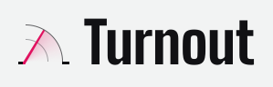
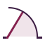
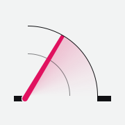
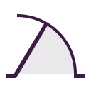

Stadium signage on a light page.
Ink on concrete paper, white boards hung from a rail, and one raspberry light that means now. Names and numbers lead in Big Shoulders; sentences explain in Instrument Sans; the clock and distances run in IBM Plex Mono. Tokens: tokens.css and tokens.json in this folder; the app copy is the :root of src/app/globals.css. Rules in full: GUIDELINES.md.
Logo: Swing, housed pivot
Two walls on one floor, an arc from the right wall, and a needle swung up from a round hub set into the end of the left wall, its afterglow behind it. Ink #111114, needle and afterglow #E0115F. Use the masters in design/studio-a/; never redraw or scale a small one up.
Hero lockup, 299 x 96, the mark's floor on the wordmark baseline, gap 12 px

App header lockup, as the app draws it: the 20 px master on whole pixels, 23 px wordmark, gap 6 px, floor on the baseline
Masters at their native size (draw each at that size, or a whole multiple where its file says so; the 128 and 256 sockets are hinted for 1x screens, and their files name the 2x file)



The outer arc, thinner than the walls
| Size | Arc | Colour |
|---|---|---|
| 128 px and up (128, 256, 512) | 0.25 unit of 32: 1 px at 128, 2 px at 256 | Full ink |
| 64 px hero | 1 device px | --mark-arc #606062 on paper, #646466 on white |
| 48, 32, 20, 16 px | 1 px | --mark-arc, ink at 65 % |
The inner ring is never heavier than the arc.
Do not
- Recolour the needle, tint the walls or use raspberry anywhere else in the mark.
- Round the corners, add shadows, gradients, outlines or animation.
- Set the wordmark in capitals, italic or another typeface.
- Scale a small master up, or draw a master off whole pixels.
Colour
Raspberry means live, hot or go and nothing else: the needle, the hot venue, the live rail, one primary action per screen. Raspberry text uses --accent-text. Status is green, amber and vermilion, never raspberry.
Type
No italics, no capitals, no letter-spaced labels. Labels are sentence case, Instrument Sans 500, 12 to 13 px, muted, beside or above their value.
Big Shoulders 800, opsz auto: names and numbers
Penn & Pour
Hero 90 px, leading 0.88, -0.012em. Titles 800 at -0.005em.
Figures 700 or 800, tabular, unit in 13 px muted sans
Instrument Sans: 400 body, 500 labels, 600 buttons
The crowd leaves the arena at 22:10. Two blocks east, your bar is the first open door they pass.
IBM Plex Mono 500: clock, distances, hex
22:10 · 0.6 km
Boards
White, a 1 px --line hairline, hung from a 3 px top rail: ink by default, raspberry when live, a status colour for a status. Corners are 0 everywhere; only map objects are round. No soft shadows, no blur.
Default rail, ink
Saturday
Live rail, raspberry
Arena lets out
Status rail
Sent
Flat board, no rail
Nested detail
Components
Shared classes in globals.css: .btn, .chip, .field, .score-ring, table.data, .card, .eyebrow (now a sentence-case label).
Buttons: 44 px, square, sentence case 600 / 15 px
Ink fill; raspberry fill once per screen; 1.5 px ink outline.
Tags: 22 px, soft fill, 6 px square dot
Score: the figure, then a 20-segment marquee bar
Raspberry on a hot board, cold grey on a quiet one.
Data table: sentence-case muted heads, hairline rows, tabular figures
| Moment | Starts | People | Distance |
|---|---|---|---|
| Arena lets out | 22:10 | 18,000 | 0.6 km |
| Comedy club, late show | 23:30 | 320 | 0.3 km |
Data and map
Time series: square columns, the hot window in raspberry, now a 2 px ink line
Map: light land, cold venues grey circles, the hot venue raspberry with a solid sign, your place an ink square, dashed ink radius, the afterglow sweep
Retired
The v1 look is gone from the logo files, globals.css and the shared components; a few residues are still being cleared in src/app/page.tsx, src/app/radar/ and src/app/start/. Retired: cream paper, the amber accent, Fraunces with its italic accent word, Inter, uppercase tracked eyebrows, rounded soft-shadow cards, pills, frosted headers and the threshold mark. palettes.json holds no palette any more; the retired v1 palettes are kept as a record in design/_archive/brand/.